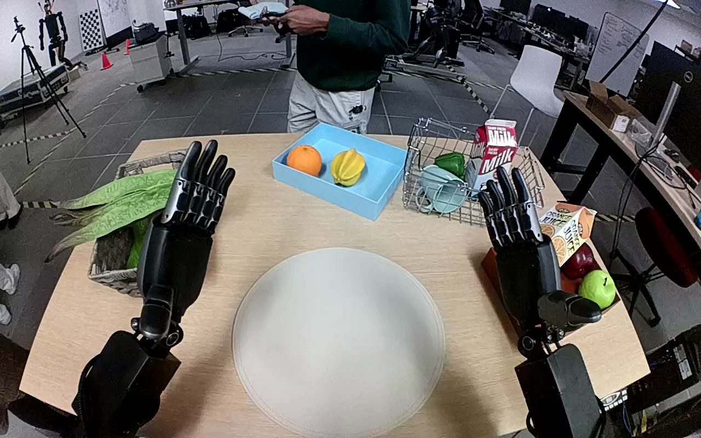

NVIDIA GR1 · 78
Video 78

Visual review action_review.json
{
"prompt_protocol": "humanoid_action_v1",
"prompt_provenance": "visually_authored_from_video_and_initial_frame",
"reviewed_contact_sheets": [
"sheet_001.jpg"
],
"inspected_frame_stride": 2,
"inspected_sampled_frame_count": 60,
"initial_scene": "Forward-looking view over two robot forearms and hands toward a table. A long green leafy vegetable with a pale stem lies across a wicker basket on the robot left. The central circular mat is empty. The right hand is open beside the right-side tray.",
"observed_sequence": [
{
"start_frame": 0,
"end_frame": 12,
"action": "Both hands initially open, with the left hand above and near the leafy vegetable and the right hand held above the right-side tray.",
"confidence": "high"
},
{
"start_frame": 13,
"end_frame": 38,
"action": "Left forearm moves toward the basket and the left wrist turns to bring the thumb and fingers around the long leafy vegetable.",
"confidence": "high"
},
{
"start_frame": 39,
"end_frame": 83,
"action": "Left fingers close around the leafy body while it remains over the basket; the arm makes small grasp adjustments before lifting.",
"confidence": "high"
},
{
"start_frame": 84,
"end_frame": 98,
"action": "Left hand raises the grasped leafy vegetable clear of the basket, uncovering the fruit beneath it. The right hand does not assist.",
"confidence": "high"
},
{
"start_frame": 99,
"end_frame": 111,
"action": "Left arm carries the vegetable inward toward the circular mat, turning it so the pale stem points toward the robot right and lowering it across the mat.",
"confidence": "high"
},
{
"start_frame": 112,
"end_frame": 119,
"action": "Vegetable settles flat across the mat. The left fingers and thumb open at the end, releasing their grasp while the hand remains above the leafy end; no withdrawal follows.",
"confidence": "high"
}
],
"arm_hand_roles": {
"left": "Sole manipulating hand: approaches basket, grasps leafy vegetable, lifts, transports and lowers it onto the central mat, then opens fingers to release.",
"right": "Remains open beside the right-side tray throughout; no object contact, stabilization or hand-to-hand transfer.",
"coordination": "Single-handed manipulation; no coordinated two-hand support and no physical interaction with the person beyond the table."
},
"anatomical_side_evidence": "The camera looks forward over the paired robot forearms emerging from the near lower edge, establishing an egocentric body convention rather than a facing-robot image. In the initial PNG both open palms are visible with the thumbs on their medial edges: the image-left hand has its thumb toward the center/right and is the anatomical left hand; the opposite hand is the right. Shoulder attachments are outside the image, but the paired forearm origin, palm/thumb anatomy and continuous motion support this naming.",
"terminal_state": "The leafy vegetable lies flat across the central circular mat with its pale stem to the robot right. The left hand is open above the leafy end, still close to the object; the right hand is open and idle. No arm withdrawal occurs before the final frame.",
"uncertainties": [
"The palm partially occludes the leafy end during final placement, so exact mat-contact timing and individual fingertip clearance cannot be resolved; finger opening and the flat, stationary vegetable on the mat support the observed release."
],
"annotation_discrepancies": [],
"evidence_frame_indices": [
0,
40,
84,
90,
100,
108,
116,
119
],
"selected_execution_status": "success",
"inspection_coverage": {
"full_sequence": "Every second decoded frame from 0 through 118 viewed in sheet_001.jpg; native source initial PNG inspected separately.",
"native_essentials": "Native frames 0, 40, 84, 90, 100, 108, 116 and 119 viewed to establish anatomy, grasp, lift, transport, mat placement and final finger opening."
},
"video_id": "78",
"dataset": "NVIDIA_GR1_100",
"dedicated_review_agent": "review_gr1_78",
"review_source_video": "NVIDIA_GR1_100/78/original/original.mp4",
"source_frame_count": 120,
"source_fps": 20.0,
"native_detail_frames": [
0,
40,
84,
90,
100,
108,
116,
119
],
"world_model_prompt": "Using its left hand, the robot grasps the long green leafy vegetable lying across the left basket and lifts it free. It carries the vegetable to the central circular mat, lowers it flat with the pale stem pointing right, and opens its fingers to release it onto the mat, leaving the hand above the leafy end. Keep the camera fixed; preserve robot geometry, physically valid joint motion, and normal gripper opening and closing.",
"original_task_instruction": "Use the left hand to pick up green leafy vegetable from basket on the left side of the table to circular mat at the center of the table.",
"selected_segment": {
"start_frame": 0,
"end_frame_exclusive": 120,
"reason": "Complete original single-task reference; no cropping or trimming requested."
},
"source_video_sha256": "338dbf438e49566e109ebcc93acf8866416ec2209250f9450de598d4a1a5c118",
"review_completed_at": "2026-10-13T18:34:24.928079+00:00"
}